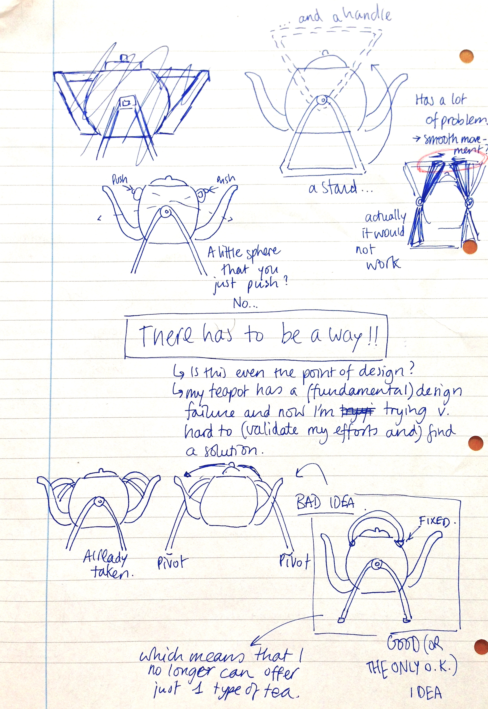

SKETCHES
Click on a subsection to know more Getting to the Perfect Teapot | The Perfect Teapot
Getting to the Perfect Teapot
Below are some sketches and brainstorm-doodling in order to arrive at something that's good enough to be an X teapot.


The Perfect Teapot
Below are the sketches of my 'final' idea: A teapot that brews two types of tea separately, and that satisfies those who like mixing tea and/or who enjoy tea when shared with other people (who may like another type of tea).
The last sketch involve too


